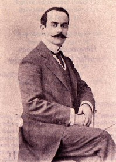

Hüseyin Cahit Yalçýn (1875-1957)

Yazar, siyaset ve fikir adamlarýmýzdandýr. Tanin Gazetesi’nin yazarlýðýný yapmýþ, daha sonra sahibi olmuþtur. Ýkinci Meþrutiyet döneminde Ýttihat ve Terakki saflarýnda siyasete atýlmýþ ve milletvekili olmuþtur. Kendilerine muhalif olanlara karþý sert üslubuyla dikkat çekmiþtir. Mütarekeden sonra Malta’ya sürgün edilmiþtir. Cumhuriyetin ilk yýllarýnda çýkarýlan bazý kanunlara karþý çýkýp Ýstiklal Mahkemelerinde yargýlanýrken, daha sonraki yýllarda CHP’nin sözcülüðünü yapmýþtýr. 1939-1950 yýllarý arasýnda milletvekili olarak mecliste bulunmuþ, daha sonraki DP iktidarýna sert muhalefette bulunmuþtur. Risale-i Nur’da, Mizancý Murad ile hürriyetin mahiyeti üzerindeki tartýþmalarý vesilesiyle ismi zikredilmiþ, bu konudaki tavrý ve fikirleriyle yanlýþ ve hatalý olduðuna iþaret edilmiþtir.Hüseyin Cahit, 1875 yýlýnda Balýkesir’de doðdu. Babasý Ali Rýza Efendidir. Ýlköðrenimini Ýstanbul Aksaray’da bulunan Yakup Aða mektebinde yaptý. Babasýnýn memuriyeti ve Serez’e tayini üzerine, buraya gitti ve askeri rüþtiyeyi burada bitirdi. Daha sonra annesi ile birlikte Ýstanbul’a döndü. Mülki Ýdadisi mektebine kaydýný yaptýrarak eðitimini sürdürdü. 1893’de bu okuldan mezun oldu. Burada okuduðu sýrada yerli ve yabancý yazarlarýn eserlerini okumaya baþladý. özellikle Ahmed Mithat Efendi’nin etkisinde kalarak “Nadide” adlý romanýný yazdý.
Hüseyin Cahit, 1896 yýlýnda Mülkiye mektebinden iyi bir derece ile mezun oldu. Ayný yýl içinde Maarif Nezareti Mektubi Kalemi’nde memur olarak çalýþmaya baþladý. Henüz öðrenciliði devam ederken bazý gazetelerde yazýlar yazmaya baþladý. Mütalaa, Sabah, Saadet ve Tarik gazetelerinde makaleleri yayýmlandý. Cenab Þahabettin ve Mehmed Rauf’la tanýþtýktan sonra Servet-i Fünun topluluðuna katýldý.
Servet-i Fünun’da yazmaya baþlayan Hüseyin Cahit, Tevfik Fikret’in ayrýlmasýndan sonra derginin yönetimini üstlendi. Bu dönemde kendi yayýn guruplarýyla diðer yayýmcýlar arasýndaki tartýþmalarda daima ön palana çýktý. Edebiyat ve Hukuk adýyla Fransýzca’dan tercüme ettiði bir yazýyý 1901 yýlýnda yayýmladýktan sonra derginin kapanmasýna, içinde bulunduðu topluluðun da daðýlmasýna sebep oldu.
Memuriyet hayatýný sürdüren Hüseyin Cahit, Türkçe ve Fransýzca öðretmenliði yaptýðý gibi, müdür yardýmcýlýðý ve müdürlük görevinde de bulundu. 1906 yýlýnda Mercan Ýdadi’sinde müdürlük yaptý. Ýkinci Meþrutiyet’in ilanýndan sonra memurluðu býraktýðý gibi edebiyat ile de ilgisini kesti ve siyasete atýldý. Ýttihat ve Terakki Cemiyeti’ne girmek suretiyle aktif olarak siyasetin içinde bulundu. Yazdýðý yazýlarýyla cemiyetin kalemþorluðunu yaptý. Tanin Gazetesi’ni Tevfik Fikret ve Hüseyin Kazým ile birlikte çýkardý. Gazetenin çýkmasýndan kýsa bir süre sonra, neþri tamamen üzerine kaldý.
1908’de yapýlan seçimlerde Ýttihat ve Terakki’nin adayý olarak Ýstanbul’dan milletvekili seçildi. Milletvekili seçildikten sonra, kendilerine muhalif olan Ýkdam Gazetesi yazarlarýndan Ali Kemal ile polemiðe girdi. 31 Mart Olayý’nýn çýkmasý üzerine Tanin matbaasý tahrip edildiði gibi, kendisi de öldürülmekten zor kurtuldu. Ona benzetilen Lazkiye mebusu Emir Aslan yanlýþlýkla öldürüldü. Olaylar sýrasýnda Selanik’e kaçtý. Hareket Ordusu’nun Ýstanbul’a gelip kontrolü ele geçirmesinden sonra Ýstanbul’a döndü.
Hüseyin Cahit, 1911-1922 yýllarý arasýnda Duyun-ý Umumiye’de çalýþtý. Yazý çalýþmalarýný sürdürmeye devam ederken, kullandýðý sert üsluptan dolayý Tanin Gazetesi’nin sýk sýk kapatýlmasýna sebep oldu. Kapatýlan gazetesinin yerine Cenin, Renin ve Senin adlarýný taþýyan gazeteler çýkardý. 1913 yýlýndan itibaren Ýttihat ve Terakki ile aralarý bozulmaya ve bu tarihten itibaren cemiyeti eleþtirmeye baþladý. Gazetesi Tanin ile Balkan Savaþý’ndan sonra iliþkisi kesildi.
Mondros Mütarekesi’nden sonra Ýngilizler tarafýndan Malta’ya sürgüne gönderildi. Sürgün hayatý yaklaþýk iki yýl sürerken, ardýndan Ýtalya’ya gitti ve burada bir yýl kaldýktan sonra 1922’de Ýstanbul’a geri döndü. Döndükten sonra Tanin Gazetesi’ni tekrar çýkarmaya baþladý. Basýn özgürlüðünün tam iþlemesini isterken, demokrasiyi savunan siyasi yazýlarý, sert muhalefeti ve bazý kanunlara karþý çýkmasýndan dolayý 1923’te Ýstiklal Mahkemesi’nde yargýlandýysa da beraat etti. Ancak, 1925’te Takrir-i Sükun yasasýyla gazetesi kapatýldý ve müebbet sürgün cezasýyla Çorum’a sürüldü. Ancak, cezasý sadece bir yýl uygulandý ve tekrar Ýstanbul’a döndü.
Hüseyin Cahit, bir ara Akþam Gazetesi’nde yazdý. Fikir Hareketleri adýný taþýyan dergi çýkardý. 1935-1946 tarihleri arasýnda Yenigün’de yazýlar yazdý. Uzun bir aradan sonra 1939’da CHP’den milletvekili seçilerek meclise girdi. 1950 yýlýna kadar mecliste Ýstanbul ve Kars milletvekili olarak mecliste bulundu. 1943-1947 yýllarý arasýnda tekrar Tanin Gazetesi’ni çýkarýp yayýmlamaya devam etti. Mecliste bulunduðu süre zarfýnda devrimleri ve CHP’nin siyasi görüþlerini savundu.
Demokrat Parti iktidarýnda muhalefette bulundu. Yönetime yönelttiði eleþtirilerinden dolayý 1954’te tutuklanarak cezaevine kondu. Bir süre sonra yaþý ve hastalýðý sebebiyle cezasý kaldýrýldý. 1957 seçimlerinde tekrar aday olmuþsa da seçim sonuçlarý belli olmadan önce Ýstanbul’da öldü. Kabri Feriköy Mezarlýðý’nda bulunmaktadýr.
Özellikle yirminci yüzyýlýn baþýndan itibaren Ýslam ve Ýslam hukuku aleyhinde yazýlar yazan, Ýslam hukukunun ihtiyaçlara cevap vermediðini iddia eden, kültür deðiþiminin gereði gibi konular üzerinde fikir beyan eden yazarlardan birisi de Hüseyin Cahit’tir. Hüseyin Cahit Ýslam hukukunu donmuþ ve yetersiz olmakla itham etmiþtir. Kendisine cevap veren Bediüzzaman; bu tür iddia sahiplerinin çýkýþ noktalarýnýn yanlýþlýðýna dikkat çekmiþtir. Bunlarýn, fikir beyan ederken Ýslam hükümlerinde yer bulmamýþ zihniyetlerle, baþka din ve kavimlerde görülen uygulamalardan hareketle eleþtiride bulunduklarýný, Ýslamiyetle diðer dinleri ayný kefeye koyduklarýný belirtmiþtir. Oysa ki, Ýslamiyetle bunlarýn hükümleri arasýnda daðlar kadar fark vardýr. “… sizlerin en büyük hatanýz, bizimle hiçbir maddi-manevi münasebeti olmayan menbalarý, bizim için kabil-i tatbik kabul etmeniz, yaþadýðýmýz zamana da bu esasata göre boyanmýþ renkli camlarla bakmýþ olmanýzdýr.”(Safa Mürsel, Bediüzzaman Said Nursi ve Devlet Felsefesi, Yeni Asya Yayýnlarý, Ýstanbul 1995, s. 368-369).
Risale-i Nur’da, Mizancý Murad ile hürriyetin mahiyeti üzerindeki tartýþmalarý vesilesiyle ismi zikredilmiþ, bu konudaki tavrý ve fikirleriyle yanlýþ ve hatalý olduðuna iþaret edilmiþtir. Mizan Gazetesi sahibi Mehmed Murad ile Tanin yazarý Hüseyin Cahit fikri tartýþmalara girerken, özellikle Hüseyin Cahit’in üslubu rahatsýzlýklara sebep olmuþtur. Hürriyet kavramý ile ilgili tartýþmalara katýlan Bediüzzaman, hürriyetin sýnýrlarýný, “ne nefsine ne gayriye zararý dokunmasýn”(Münazarat, 1998, s. 54) þeklinde çizer. Bu arada, “Tam ve mükemmel hürriyet, kiþinin firavunlaþmamasý ve baþkasýnýn hürriyeti ile alay etmemesidir. Þüphesiz, gaye haktýr; ama mücadele üslubu uygun deðildir” (Münazarat, s. 56) özdeyiþini aktardýktan sonra, iki yazar arasýndaki tartýþmada Mizancý Murad’ýn haklý, Hüseyin Cahid’in ise yanlýþ ve hatalý olduðunu ifade etmiþtir.
Eserleri
Nadide, 1891 yýlýnda yazdýðý ilk romanýdýr. Hayal Ýçinde roman olup 1901’de yazýlmýþtýr. Kavgalarým adýný taþýyan romanýný 1910 yýlýnda yazmýþtýr. Türkçe dil bilgisi kitabý olan Türkçe Sarf ve Nahiv adlý eserini 1911’de kaleme almýþtýr. Uzun bir zaman dilimine yayýlmýþ olan yazý ve siyasi hayatýnýn anýlarý Edebi Hatýralar adý altýnda 1935 yýlýnda yayýmlanmýþtýr. Hayat-ý Muhayyel hikaye olup 1899’da yayýmlanmýþtýr. Hayat-ý Hakikiyye Sahneleri hakaye-fýkra mahiyetindeki eseri olup 1910’da yayýmlanmýþtýr. Niçin Aldatýrlarmýþ hikaye olup 1922’de yayýmlanmýþtýr.